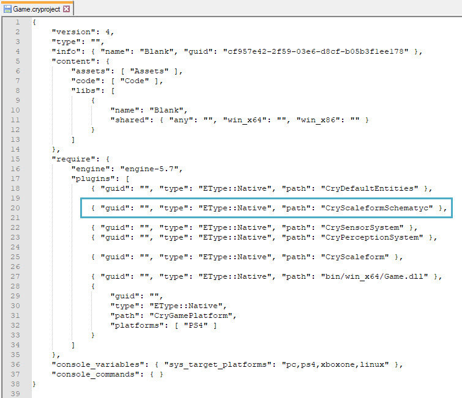
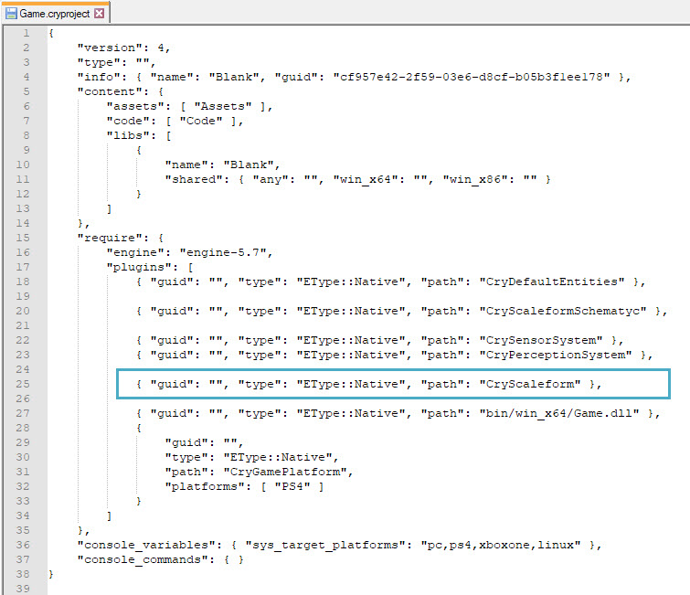
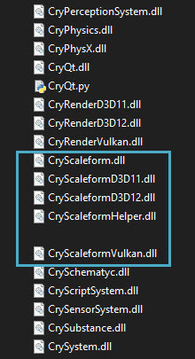

Overview
The integration of Scaleform 4 is optional and separate to Scaleform 3.
The following shows you how to choose between Scaleform 3 and Scaleform 4 in an Engine build obtained via the CRYENGINE Launcher, as well as copy the required binaries to a custom Engine build (i.e. built using source code obtained from GitHub) to enable Scaleform on them.
Additionally, this page also explains how to include the new Scaleform Schematyc (Experimental) nodes and Generated Components for either Scaleform 3 or 4 in your project.
Adding Scaleform Schematyc to Your Project
To include the Scaleform Schematyc (Experimental) nodes and Generated Components in your project, you will need to add the following plugin definition to your .cryproject file:
{ "guid": "", "type": "EType::Native", "path": "CryScaleformSchematyc" }
Adding Scaleform Schematyc to your project
Selecting Scaleform 3 or 4
Scaleform 3
By default, the Engine will load Scaleform 3 if:
- It is built into the CrySystem binary, or;
- it is available via the CryScaleformHelper.dll residing in the binary folder (i.e. bin/win_x64) and there is no plugin definition for CryScaleform in your .cryproject file.
Scaleform 4
First make sure that the following DLL files reside in your binary folder (i.e. bin/win_x64):
- CryScaleform.dll
- CryScaleformDX11.dll
- CryScaleformDX12.dll
- CryScaleformVulkan.dll
Then in your .cryproject file, add the following plugin definition:
{ "guid": "", "type": "EType::Native", "path": "CryScaleform" }
Loading Scaleform 4
Using Scaleform with a Custom Engine Build
Copy the following DLLs from the binary directory of the Launcher Engine (i.e., the Engine build obtained via the CE Launcher) to the binary directory of your custom Engine build:
- CryScaleformHelper.dll
- CryScaleform.dll
- CryScaleformDX11.dll
- CryScaleformDX12.dll
- CryScaleformVulkan.dll
The version of your custom Engine must match with the Launcher Engine for compatibility.
The Engine binary directory is the bin/win_x64 folder of your project.

Dlls to copy to custom Engine binary directory